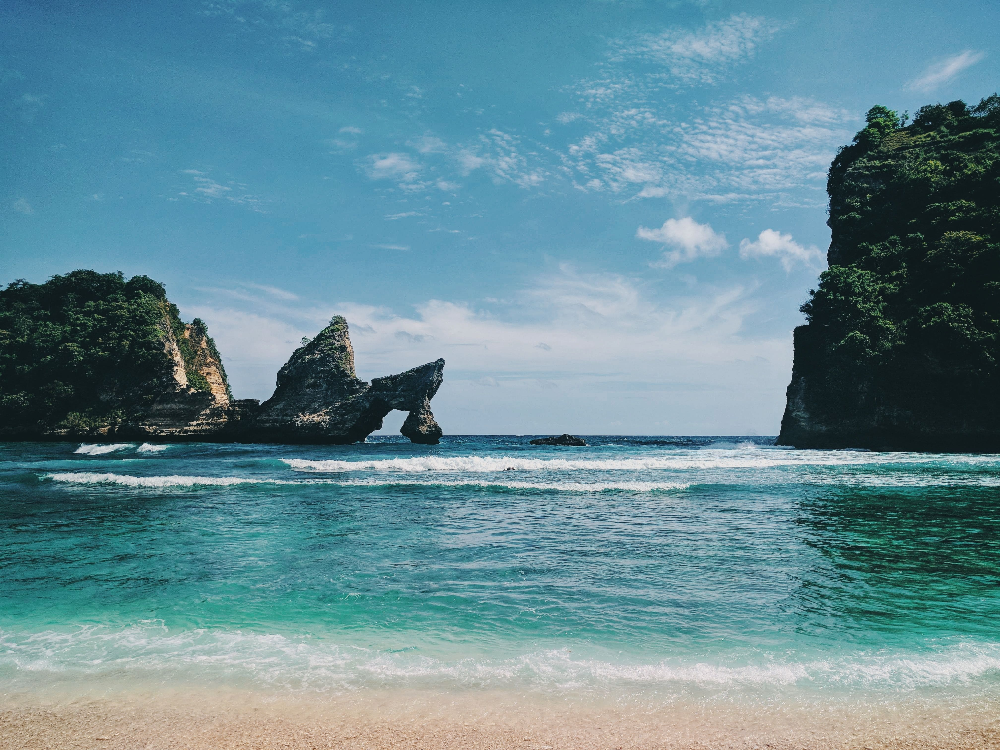
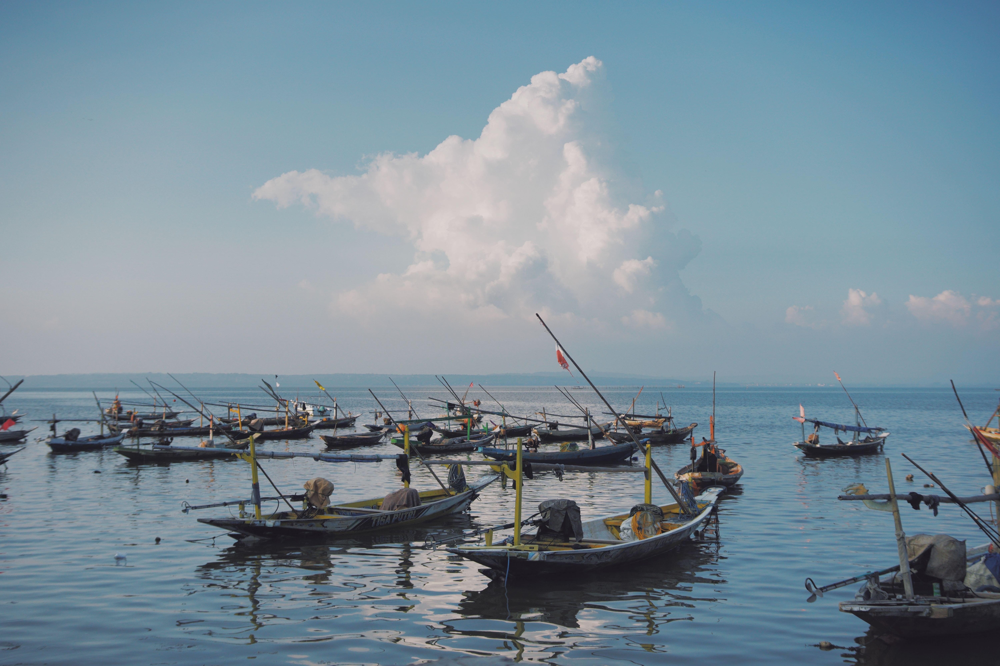
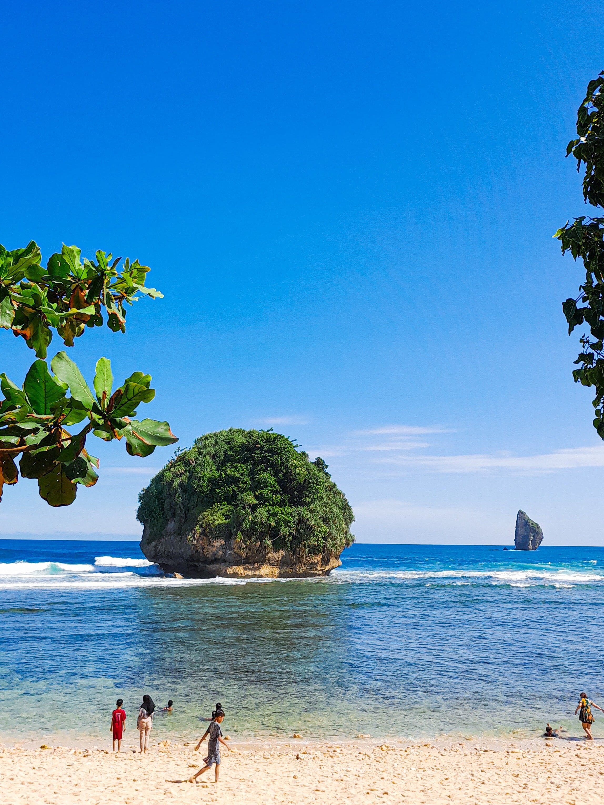
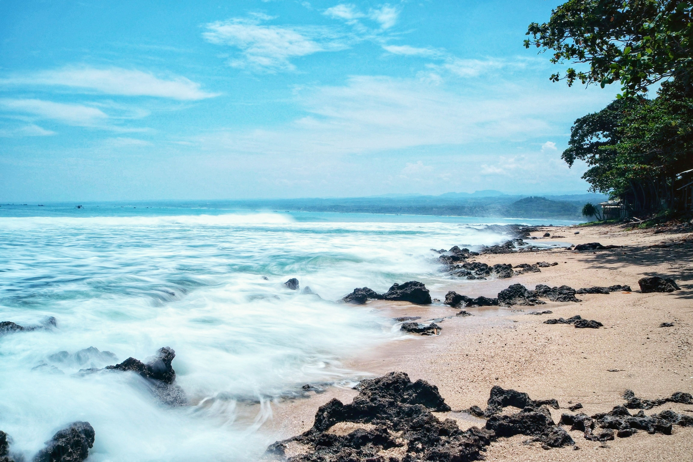
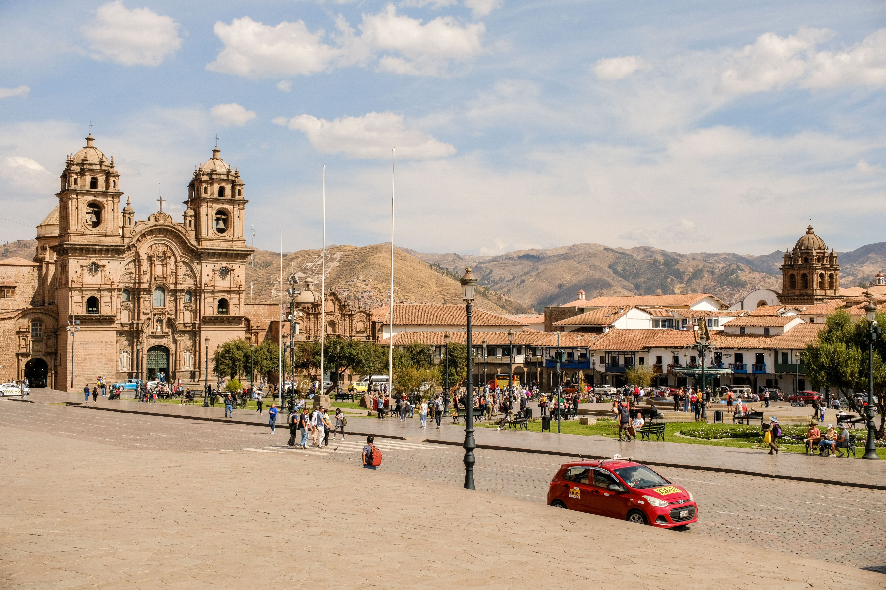

Bali
Bali is known for its beautiful beaches, traditional temples, and vibrant culture. Visitors can explore lush rice terraces, enjoy water sports, and experience the island's rich heritage.

Bali is known for its beautiful beaches, traditional temples, and vibrant culture. Visitors can explore lush rice terraces, enjoy water sports, and experience the island's rich heritage.

Yogyakarta is known for its rich cultural heritage, traditional arts, and historical sites. Visitors can explore ancient temples, experience local crafts, and enjoy the vibrant street life.

Nusa Penida is known for its pristine beaches, crystal-clear waters, and dramatic cliffs. Visitors can enjoy snorkeling, diving, and exploring the island's unique landscapes.

Rembang is known for its beautiful beaches, rich cultural heritage, and relaxed atmosphere. Discover its local traditions, scenic landscapes, and authentic experiences for an unforgettable journey off the beaten path.

Jepara is known for its beautiful beaches, rich cultural heritage, and traditional woodcarving. Explore its scenic islands, local traditions, and peaceful landscapes for an authentic and memorable travel experience.

Cusco blends rich history with spectacular mountain landscapes. Once the capital of the Inca Empire, it serves as the starting point for journeys to the famous Machu Picchu and other archaeological wonders.